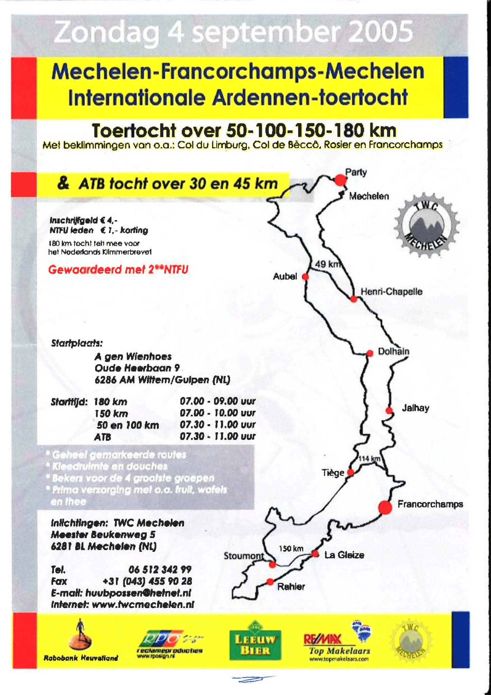

De club TWC Mechelen is opgericht op 5 november 1977 in het roemruchte café het Trefpunt beter bekend als "DE BAR". Er waren destijds 7 leden met als voorzitter Joep Lucassen, secretaris Hans Heijenrath en penningmeester Hub Lenoir.
Na sluiting van "DE BAR" verkaste de club naar café Vaessen-Kicken (bij 't Leentje) aan de commandeurstraat 27. Hier waren al enkele gewezen voetballers als toerfietser en mountainbiker actief en zij sloten zich aan bij TWC.
De toen nog sponsorloze fietskleding werd tegen een speciaal tarief aangeschaft bij de sportwinkel van Joep Delnoy in Vaals. De club groeide gestaag en er was behoefte aan enige regulering in de vorm van een eerste "Huishoudelijk reglement TWC Mechelen"
Om de nodige financiën te genereren werd tijdens een ledenvergadering besloten om een toertocht te organiseren. De eerste editie van Mechelen-Francorchamps werd gehouden in het jaar 1985. Deze zware heuvelachtige tocht kende 4 afstanden: 50, 100, 150 en 180 km. Er werd met ca. 150 deelnemers gestart vanaf het clublokaal in de Commandeurstraat. De daarop volgende jaren groeide het aantal deelnemers gestaag en werden ATB-routes over 30 en 45 km toegevoegd. In de loop der jaren werd "Mechelen-Francorchamps-Mechelen" een begrip bij de liefhebbers van toertochten.
Het bestuur wilde TWC Mechelen een officiëlere status geven. Dit werd per 11-2-1987 gerealiseerd middels een notariële oprichtingsakte.
Nadat al voor het begin van een Mechelen-Francorchamps toertocht, bij het clublokaal, een fiets van een deelnemer was gestolen en door het groeiende aantal deelnemers er meer faciliteiten nodig waren, werd de start verplaatst naar de gymzaal van de basisschool in Mechelen. Dit bleek echter ook maar een tijdelijk onderkomen. Onder druk van de toenmalige burgemeester Janssen werd de organisatie verplaatst naar A ge Wienhoes in Partij.


In de loop der jaren werd de organisatie voor de leden alsmaar veeleisender en tijdrovender. Dit op grond van het verkrijgen van de benodigde vergunningen, sanitaire voorzieningen op rustplaatsen, eisen op het gebied van veiligheid, de beschikbaarheid van voldoende vrijwilligers en niet in de laatste plaats, concurrentie van andere populaire ATB-tochten in de regio. Na meer dan 20 edities werd met de organisatie gestopt. Mechelen-Francorchamps kende op zijn top meer dan 1500 deelnemers.
In het begin van het jaar 1992 werd, door sluiting van het café Vaessen-Kicken, het clublokaal veplaatst naar café De Paardstal, hoofdstraat 57, Mechelen. Dit is nu al meer dan 30 jaar het domicilie van TWC Mechelen.
Een ander vast onderdeel in het TWC jaarprogramma is het clubweekend. Niet alleen de Alpenreuzen Alpe d'Huez en Mont Ventoux werden bedwongen, maar ook werd deelgenomen aan Luik-Bastenaken-Luik, de Waalse Pijl, de Veluwetocht Vaal Auwe, de Friese Elfstedentocht en de Ronde van Nederland (5-daagse met start en finish in Steenwijk, totaal ca. 900 km).

Er werden o.a. ook clubweekenden georganiseerd naar de Allgäu in Zuid-Duitsland, Orsbeck (D), de Vlaamse Ardennen met de beklimming van de Muur van Geraardsbergen, La-Roche (B), Stadtkyll (D), St. Vith (B), Zeeland, Leopoldsburg (B) en Mondorf-les-Bains (Lux).
Een aantal leden heeft ook deelgenomen aan de Marmotte, die verreden wordt in de Franse Alpen. Deze prestatietocht kan met een zware Touretappe vergeleken worden. De rit die in totaal 174 km lang is en 5000 hoogtemeters telt, gaat over vier cols, waarvan er drie in de Tour als buitencategorie bestempeld worden.
Mechelen heeft zich in de jongste jaren met passages van de Amstel Goldrace, de Kleeberg Challenge en de Kleeberg Cross, ontwikkeld tot een waar fietsdorp. TWC Mechelen probeert hier haar steentje bij te dragen.
Samen veilig sporten en na afloop gezellig samen zijn, onder het genot van een drankje, zal bij TWC Mechelen ook in de toekomst steeds hoog in het vaandel staan.